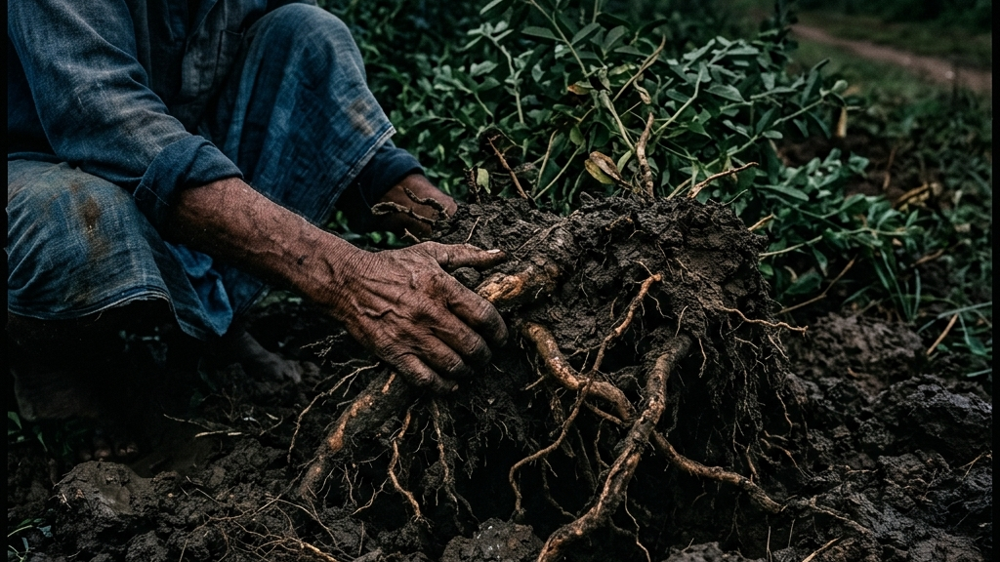
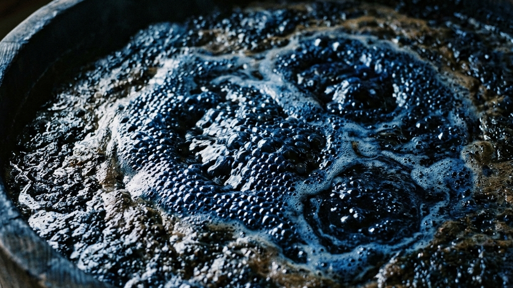
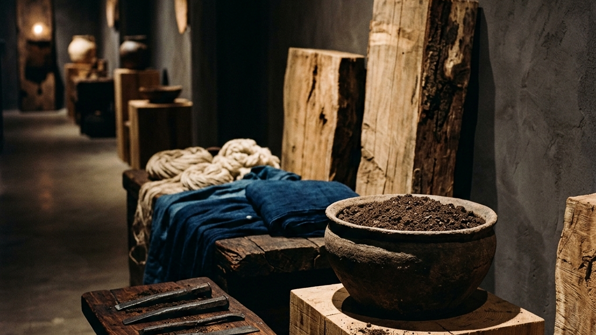

私たちが「伝統工芸」と呼ぶものの本質は、決して完成された美しいプロダクトそのものにあるのではない。それは、土壌を耕し、種を撒き、気候の理不尽さを許容しながら、途方もない時間をかけて自然と摩擦し続ける「泥臭い生態系（エコシステム）」の連続である。京都芸術大学が開講する「藍の學校」は、単なる技術継承の枠を超え、このエコシステム全体を俯瞰し、未来へと接続する実践的アートマネジメントの新たな地平を切り拓いている。
【本稿で紐解く3つの核心】
表面的なサステナビリティや効率化が叫ばれる現代において、なぜ私たちはあえて「種から育てる」という原始的で非効率なプロセスに立ち返る必要があるのか。本稿では、藍染めという一つの極北の工芸を通じて、日本の伝統工芸が直面する構造的な課題と、それを打破するための泥臭くも確かな教育的アプローチの全貌を解剖していく。

私たちが直面している伝統工芸の危機は、単に「技術を継ぐ人間がいない」という表層的な問題ではない。それは技術を支える素材、道具、そしてそれらを育む自然環境という「エコシステム」全体が崩壊しつつあるという、より根源的で絶望的な事象である。
エコシステムとは何か。それは決して、現代のビジネス用語として消費されるような綺麗な循環システムではない。藍染めを例にとれば、藍の種を蒔き、虫害や天候不順という自然の理不尽さと戦いながら葉を育て、それを収穫し、発酵させてすくもを造り、さらに灰汁建（あくだて）という微生物の活動を制御するという、途方もなく泥臭く、不確実性に満ちたプロセスそのものである。この途方もない連続性を理解せずして、単に「染める」という最終工程だけを切り取っても、それは工芸の表面を撫でているに過ぎないのだ。
現代の資本主義社会は、あらゆる摩擦を排除し、最短距離で結果に到達することを至上命題としてきた。化学染料を用いれば、誰でも簡単に、均一な青を出すことができる。しかし、その効率化の代償として私たちが失ったものは何か。それは、非観光型・小規模文化財の活用モデルにも通ずる、自然との対話や地域社会との泥臭い連関という「目に見えない知層」である。
「工芸の真なる価値は、完成品そのものではなく、そこに至るまでの『自然との果てしない摩擦と対話の記憶』に宿る。」
— Kakera 伝統工芸論
京都芸術大学が提示する「藍の學校」の真髄は、プログラム3「材料」において、「種から原材料を育てる」という工程をあえて組み込んでいる点にある。これは単なる農業体験ではない。素材が育つまでの圧倒的な時間と、思い通りにいかない自然への畏怖を身体に刻み込むための、極めて実践的で暴力的なまでの原体験の強制なのだ。この「非効率の痛みを伴うプロセス」を経ずして、持続可能なものづくりを語ることは、空虚なポーズでしかない。
工芸は、長い年月をかけてその地域の気候風土、水質、そして人々の生活様式に最適化されてきた。藍染め一つをとっても、阿波（徳島）の気候風土が育む藍と、他の地域で育つ藍とでは、その性質も染色へのアプローチも異なる。この局所性（ローカリティ）こそが、工芸の多様性と強度を担保してきたのである。
エコシステムを構成する3つの絶対要素
エコシステムを未来へ繋ぐということは、単に技術者を育成することではない。その技術が成立するための「土壌」そのものを保護し、再構築することを意味する。それは、ビジネスにおけるオーケストレーションと全く同じ構造を持っている。すべての要素が有機的に絡み合い、一つの巨大な歯車として機能しなければ、文化は容易に死に絶える。だからこそ、私たちは種を蒔くことから始めなければならないのである。それが、どれほど非効率で、泥臭く、果てしない道のりであったとしても、である。
藍染めの生態系（エコシステム）を理解する上で、私たちが決して避けて通れない歴史的ファクトがある。それは、なぜ藍作（あいさく）が日本の特定の地域、とりわけ徳島県（阿波国）において爆発的に発展し、日本特有の美学を形成するに至ったのかという、風土と人間の壮絶な摩擦の歴史である。現代の私たちは「伝統」と聞くと、最初からそこにあった完成された美しいパッケージを想像しがちだが、その起源は往々にして、残酷なまでの自然の脅威に対する「生存戦略（カウンター）」なのだ。
徳島県を横断する吉野川は、古来より「四国三郎」の異名を持ち、台風のたびに甚大な氾濫を引き起こす暴れ川として恐れられてきた。通常の稲作を行えば、収穫期である秋の台風によって一年間の苦労がすべて泥水に呑まれてしまう。この「自然の理不尽な破壊」という絶望的な制約の中で、阿波の農民たちが見出した一筋の光明、それが「藍」であった。藍は稲と異なり、夏の台風シーズンが到来する前（7月から8月上旬）に収穫期を迎える。つまり、水害のリスクを物理的に回避できる作物だったのである。さらに吉野川の氾濫は、上流から肥沃な土壌を下流の平野部に運び込み、藍の生育に不可欠な豊かな養分を毎年自動的にもたらした。自然の猛威を呪うのではなく、その破壊的なサイクルそのものをシステムの動力源（エンジン）として組み込んだのである。
吉野川流域におけるエコシステムの構造証明
この泥臭くも圧倒的なスケールを持つ歴史的背景こそが、真の意味での「持続可能な物作りの思考」である。彼らは自然をコントロールして治水しようとしたのではない。コントロール不可能な自然の暴力（氾濫）を前提条件として受け入れ、その上で最も強靭な生態系を編み上げたのだ。京都芸術大学の「藍の學校」がプログラムの中で「種から原材料を育てる」ことにこだわる理由はここにある。完成された美しい藍色の奥底には、こうした血みどろの歴史と、自然と人間の果てしない摩擦の記憶が何層にもわたって地層のように堆積している。土に触れ、気候に翻弄されることで初めて、学生たちは「エコシステムとは、理不尽さを許容する強靭な覚悟である」という生々しい一次情報（哲学）を身体で理解するのである。
技術を保存するだけでは、工芸は博物館のガラスケースの中で剥製になる。真に伝統を未来へ生かすためには、その局所的で泥臭い技術を、現代のコンテクストや世界規模の文化資本へと「翻訳」し「転化」させる強力なオーケストレーションが必要不可欠である。これこそが、アートマネジメントが担うべき最も重要で、かつ最も難易度の高い使命だ。
職人は、自らの手の内に宿る暗黙知や、素材との対話に極限まで集中するスペシャリストである。しかし、その圧倒的な深さゆえに、時に現代の市場や異分野との接続点を見失うことがある。アートの社会実装と新たなる結節点においても語られているように、職人の言語を現代のビジネスやアート市場の言語へと翻訳し、新たな価値の交差点（結節点）を創出する「ゼネラリストとしての翻訳者」が介在しなければ、どんなに素晴らしい技術も孤立してしまう。
京都芸術大学の「藍の學校」では、この翻訳者を育成するためのプログラム1「知識」とプログラム2「実践」が用意されている。作家やデザイナーのレクチャーを通じた視野の拡張と、実際の制作過程を学ぶ技術の向上が並行して行われる。これは、頭でっかちな理論家を生み出すためではない。「現場の痛み」を知るマネージャーを育てるための、極めて臨床的なカリキュラムである。現場で職人が流す汗と、藍の強い匂い、そして思い通りにいかない染色の難しさを肌で知らなければ、他者の心を動かす真のマネジメントなど不可能だからだ。
2026年度のテーマである「京都から世界へ」は、単なるスローガンではない。世界各地で独自の文化を形成してきた「藍」という普遍的な素材を軸に、日本の局所的な工芸と世界の工芸を接続しようという野心的な試みである。自国の伝統を深く掘り下げることは、逆説的に世界の普遍性へと到達する最短ルートとなる。備前焼が切り拓く世界資産と現代アートへのパラダイムシフトに見られるように、極限まで磨き上げられたローカリティは、国境を越えて人々の魂を揺さぶるグローバルな力を持つ。
京都府内での泥臭いフィールドワークを通じ、その土地の土壌、水、歴史が生み出した特異な工芸の生態系を解剖し、身体化する。
得られた一次情報と哲学を、世界の普遍的な「藍」の文化と比較・相対化し、現代社会の課題解決や新しい美意識へと転化・実装する。
アートマネジメントの本質は、安全な会議室で綺麗な企画書を書くことではない。現場の泥にまみれ、職人の葛藤を共有し、時には激しい意見の衝突（摩擦）を乗り越えながら、誰も見たことのない新しい価値の生態系を構築していくことだ。それは、無数の変数と不確実性をコントロールしようともがく、経営のオーケストレーションそのものである。藍の學校が目指しているのは、まさにそのような「血の通ったマネジメント人材」の輩出に他ならない。それは、効率化とAI化が進む現代において、最も人間的で、最も代替不可能な能力なのである。

「環境に配慮した持続可能な物作り（サステナビリティ）」。この言葉は現代のビジネスにおいてあまりにも手垢がつき、消費されるだけの空虚なバズワードとなり果ててしまった。しかし、伝統工芸が数百年にわたって実践してきたそれは、昨今の企業が掲げるSDGsのような生易しいものではない。それは、人間の思い通りにならない自然の圧倒的な力に対する「畏怖」であり、物理的な「制約」と「摩擦」を真正面から受け入れるという、血みどろの哲学である。
近代工業は、自然を人間の都合の良いようにコントロールし、均質化し、効率化することで発展してきた。しかし、天然の藍染め（本藍染め・灰汁発酵建）のプロセスは、その対極に位置する。すくも（藍の葉を発酵させたもの）に木灰の灰汁、ふすま、石灰などを加え、微生物の力で発酵させるという工程は、気温、湿度、そして目に見えない微生物の機嫌によって日々劇的に変化する。職人は藍の「機嫌」を伺い、五感を研ぎ澄ませて微細な変化を察知し、自らの行動を自然のペースに合わせることを強いられるのだ。
| 比較軸 | 近代工業（化学染料） | 伝統工芸（天然藍染め） |
|---|---|---|
| 時間軸と制御 | 即時的・人間の完全制御下 | 圧倒的な遅延・自然（微生物）のペース |
| 結果の均一性 | 均質で再現性が高い | 一つとして同じものがない一回性 |
| 環境への哲学 | 資源の消費と廃棄 | 循環と共生（最終的に土に還る） |
この「人間の思い通りにならない」という強烈な制約こそが、境界の融解と昇華──アートと工芸が目指す「同一の頂」が示すような、工芸の底知れぬ美しさと深みを生み出している。藍液は生き物であり、無理に染めを重ねれば疲弊して色が出なくなる。藍を休ませ、時に栄養を与え、共に生きる。この圧倒的な非効率性と摩擦を許容することなしに、本物の「JAPAN BLUE」の深淵に到達することはできない。
藍の學校が着目する「持続可能な物作りの思考」とは、単に環境負荷を減らすという物理的な指標にとどまらない。ノイズや不確実性を排除するのではなく、システムの一部として内包する能力のことだ。天候によって葉の育ちが悪ければ、その年の色を受け入れる。染めムラが出れば、それを景色として愛でる。これは、あらゆるリスクを排除しようとする現代社会に対する、静かだが極めて過激なカウンター（反逆）である。
私たちは、効率化の果てに「コントロールできないものに対する耐性」を失ってしまった。しかし、自然とは本来、理不尽で予測不可能なものである。伝統工芸の職人たちは、何世代にもわたってこの自然の理不尽さと対峙し、その摩擦の中で技術を研ぎ澄まし、精神性を高めてきた。藍染めを通して学ぶべきは、染色技術そのもの以上に、この「思い通りにならない世界を生き抜くための哲学と態度の継承」なのだ。それは、ビジネスや人生という不確実な航海において、私たちが持つべき最も強靭な羅針盤となるに違いない。だからこそ、私たちは土に触れ、発酵の匂いを嗅ぎ、自然とのヒリヒリするような境界線に立たなければならないのだ。
伝統工芸と現代工業の摩擦を語る際、私たちが決して目を背けてはならない物理的なファクトがある。それは、明治以降に台頭した安価な「合成インディゴ（化学染料）」と、伝統的な「天然灰汁発酵建（てんねんあくはっこうだて）」との間に横たわる、不可逆的で決定的な断絶である。今日、私たちが街で見かける安価なジーンズや藍色シャツの圧倒的多数は、石油を原料とする合成インディゴで染められている。効率とコストパフォーマンスを至上命題とする現代社会において、天然藍は市場競争という戦場で完全に敗北したかのように見える。しかし、その敗北の裏側で私たちが喪失した「機能」と「美学」の代償は、あまりにも大きい。
合成インディゴによる染色は、繊維の表面に色素を強力に接着（コーティング）させる技術である。そのため、洗濯や摩擦によって表面の色素が剥がれ落ちると、下から白い糸が露出する。これが現代のジーンズ等で見られる一般的な「色落ち」である。対して、天然のすくもを用い、微生物の力で発酵させる天然藍染めは、染色メカニズムそのものが根本から異なる。発酵によって還元された藍の色素は、布を染め液に浸し、空気に触れて酸化することで初めて繊維の深部（コア）で発色し、定着する。つまり、表面を塗るのではなく、繊維そのものの構造に浸透し、一体化するのだ。
さらに、天然藍染めには単なる色彩を超越した強烈な物理的ファクトが存在する。藍の成分には、トリプタンスリンをはじめとする抗菌・消臭・防虫作用を持つ物質が含まれており、古来より武士の肌着や剣道着、あるいは農作業着として重宝されてきた。生地を物理的に強くし、人体を守るという「機能性のアパレル」の元祖であったのだ。効率化のために化学合成されたインディゴには、色という視覚情報はコピーできても、この複雑な有機化合物がもたらす「生命を守る機能」まではコピーできなかったのである。
「効率は視覚を模倣するが、本質（機能と時間）までは決して再現できない。」
— 効率主義と手仕事の乖離
藍の學校において学生たちが向き合うのは、この「失われた機能と時間の重み」である。微生物というコントロール不可能な他者と協働し、途方もない手間と時間をかけて布を染める行為は、単に「綺麗な青を作る」ための手段ではない。それは、効率化という名の暴力によって削ぎ落とされた「人間と自然の生々しい連関」を取り戻すための、極めて批評的な臨床実験なのだ。この科学的・物理的な断絶の深さを知る者だけが、真のサステナビリティを語る資格を持つのである。

プログラムの最終段階である「成果展」。それは単なる学習の発表の場ではなく、学生たちが身体に刻み込んだ泥臭い一次情報と哲学を、社会という荒波に向かって放つ「社会実装」の試練である。記憶を織り、未来へ繋ぐ。Bank of Craftが描く「伝統と革新」の生態系が示すように、伝統は保存されるだけでは意味がない。それは常に現在進行形の表現として解体され、再構築され、現代の他者と接続されることで初めて「生きた文化」となる。
頭で理解しただけの知識は脆い。藍の種を蒔き、手を真っ青に染めながら悪戦苦闘したフィールドワークの記憶だけが、血肉となって表現に重みを宿す。成果展では、プロダクト、映像、作品、材料、道具など、多角的なアプローチで「物作りについて考える場」が提供される。これは、工芸を完成品としてのみ消費する現代の風潮に対する、プロセスそのものの価値化（プロセス・エコノミー）の実践でもある。
学生たちは、来場者との対話を通じて、自身の内なる熱量と社会との間にある「摩擦」に直面するだろう。伝統を現代にどう翻訳するか。環境への配慮をどうデザインに落とし込むか。アートマネジメントとは、この摩擦から逃げることなく、最適解を模索し続ける果てしないオーケストレーションの連続なのだ。
京都芸術大学の「藍の學校 2026」は、単なる教育プログラムではない。それは、効率化の波に飲み込まれつつある現代社会において、人間が人間らしくあるための「生態系（エコシステム）」を取り戻すための、静かなる闘争の拠点である。種から育てるという究極の非効率。自然の発酵を待つという圧倒的な遅延。しかし、その途方もない無駄と摩擦の中にしか、私たちが次世代へ遺すべき真の価値は存在しない。
ゼネラリストとして全方位の責任を負いながら、暗闇の中で決断を下し続ける。それは経営の孤独にも似ている。だが、そりゃそうだ。未知の領域を開拓し、新たな文化の土壌を耕すということは、元来そういうことだもんな。だからこそ、私たちは歩みを止めてはならない。藍の葉が深い青を生み出すように、泥臭い葛藤の連続こそが、いつか世界を染め上げる鮮やかな未来を創り出す。その覚悟を持った者たちが、今、京都の地から世界へと羽ばたこうとしているのだ！
ここで私たちは、ある一つの巨大な問いに直面する。なぜ、「藍の學校」のような実践的かつ泥臭いアートマネジメントのプログラムを、一介の企業や個人の工房ではなく、「大学（京都芸術大学）」という教育機関が担わなければならないのか。それは単なる産学連携のトレンドなどではない。歴史を紐解けば、資本主義の猛威から文化の純度を守り、次世代への結節点となるのは、常に「教育機関」という特殊な生態系（エコシステム）であったという絶対的なファクトが浮かび上がるのだ。
1919年、ドイツのワイマールに設立された美術と建築の総合教育機関「バウハウス（Bauhaus）」を想起してほしい。産業革命以降、粗悪な大量生産品が溢れ返り、職人の手仕事（工芸）が急速に駆逐されていく絶望的な状況下で、彼らは「芸術と技術の新たな統一」を掲げた。バウハウスの最大の発明は、理論を教えるだけでなく、工房での泥臭い「実践（手仕事）」を通じて、素材の抵抗と物理法則を身体に刻み込むカリキュラムを構築したことにある。彼らは、市場の短期的な利益要求から切り離された「教育」という不可侵の領域（サンクチュアリ）を確保することで、産業と芸術の間に生じた致命的な断裂を修復しようと試みたのである。
民間企業は四半期ごとの利益を追求せざるを得ない。しかし大学機関は「100年後の文化資本」を見据え、直近の利益度外視で非効率な実験（種から藍を育てる等）を実行できる唯一の防波堤となる。
閉鎖的な職人の世界だけでは不可能な、科学・デザイン・マネジメント・歴史学など、多様な知性を意図的に衝突（摩擦）させるためのオーケストレーションの場を提供する。
京都芸術大学の「藍の學校」は、まさに現代日本におけるバウハウス的実践の最前線と言える。伝統工芸の多くは今、後継者不足や市場の縮小により、個人の工房単位では到底支えきれないほどの限界集落化（エコシステムの崩壊）を起こしている。職人が技術の継承に全精力を傾けざるを得ない中、その技術を「文化資本」として社会実装するためのアートマネジメント機能までを職人個人に背負わせるのは酷というものだ。だからこそ、大学が介入し、泥臭い一次情報を理解する「ゼネラリスト（翻訳者）」をシステム的に育成する必要がある。
教育とは、究極の長期投資である。「種から原材料を育てる」というプログラムは、そのまま「学生という人間を種から育てる」という哲学のメタファーでもある。彼らが現場で流す汗と、染色の過程で経験する無数の失敗（摩擦）は、決して無駄にはならない。それは大学という庇護のもとで安全に許容される「良質なノイズ」であり、やがて彼らが社会という荒野に出たとき、極度な効率化や資本の論理に飲み込まれず、真に価値のある文化を護り抜くための「圧倒的な思考体力」へと転化していくのである。だからこそ、大学という機関がリスクを背負って泥に塗れることには、途方もない歴史的必然性と希望が存在するのだ。
藍の學校のプログラム4「成果展」において、極めて象徴的なアプローチが採用されている点を見逃してはならない。それは、完成されたプロダクトや映像作品と並置して、「材料」と「道具」、つまり制作の泥臭いプロセスそのものが展示されるという事実である。伝統工芸の世界において、長らく評価の対象となるのは磨き上げられた「完成品」のみであり、そこに至るまでの血の滲むような過程や、使い込まれた道具たちは舞台裏に隠されるべきものとされてきた。しかし、実践型アートマネジメントがここで提示しているのは、その不可視の領域（バックステージ）そのものを「文化資本」として社会に開示するというパラダイムシフトである。
現代の消費者は、もはや物質的な完成度だけでは動かされない。アノニマスの痕跡と不完全なる美で論じられているように、物が溢れる時代において真に渇望されているのは、その背後に流れる「圧倒的な時間」と「自然との格闘の痕跡」である。種を蒔き、葉を育て、発酵を待つ。その途方もない非効率性と、職人が道具と交わした無言の対話。それら「プロセス」そのものを一つのアート・ドキュメンタリーとして再構築し、鑑賞者の前に提示すること。これこそが、完成品の美しさだけでは伝えきれない工芸の「重力」を、現代のコンテクストへと翻訳する最強のアートマネジメントなのだ。成果展に並べられた泥だらけの道具や未完成の材料は、決して未熟さの象徴ではない。それは、効率化という暴力に抗い、自然の理不尽さを許容し続けた者たちだけが獲得できる、最も誇り高き「生きた哲学の痕跡」なのである。
Reference:
京都芸術大学「藍の學校 2026」開講。種から学び、伝統工芸のエコシステムを未来へつなぐ実践型アートマネジメント・プログラム
伝統を身に纏い、1,000年先の未来へ遺す。Kakeraが織り上げる西陣織アロハシャツの哲学と私たちの物語は、CONCEPT、Kakera Aloha、およびABOUTよりご覧いただけます。